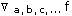
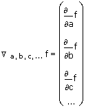
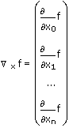
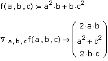
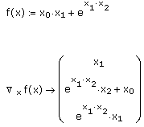
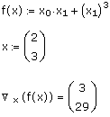
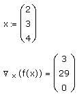

Gradient Operator |
Keystroke: [Ctrl] [Shift] G

Returns the gradient of the scalar function f with respect to the variables a, b, c ....

The result is a column vector whose length equals the number of variables in the list a, b, c ....
Alternatively, you can specify the variables as a single vector x, and write f in terms of subscripted variables x0, x1,..., xn.


The following example computes the gradient of a function with respect to a vector x of subscripted variables.

The gradient operator is especially useful for setting up arguments for the curve-fitting function genfit.
Note: The preceding example, and the remarks that follow, assume that the built-in variable ORIGIN, which sets the starting index for all arrays, has its default value of 0. Changing the Value of ORIGIN describes how changing ORIGIN the affects the behavior of the gradient operator.
In the preceding example, the variable with the largest subscript appearing in f is x2. As a result, Mathcad assumes that there are three variables, x0, x1 and x2, and returns a gradient vector of length 3, containing the partial derivatives with respect to these variables. Note that if either x0 or x1 did not appear in F, Mathcad would still return a vector of length 3, but the entries corresponding to variables not appearing in f would be 0.
In general, if the largest subscript appearing in f is n, Mathcad assumes that there are n + 1 variables, x0, x1, ... , xn, and returns the gradient of length n + 1.
Since x0 and x1 are the only variables appearing in the expression, Mathcad takes the partial derivatives with respect to x0 and x1 and returns a vector of length 2.
If you define x numerically, you can evaluate the gradient with the equal sign (=). Mathcad evaluates the gradient at the values in x and returns a vector of numbers, representing the gradient at the point x. The length of x must be greater than the largest subscript appearing in f, and Mathcad returns a gradient with length(x) entries. For example:

However, if you define x to be a vector of length 3, Mathcad assumes that there is an additional variable, x2, which does not appear in the expression for the function, and returns a vector of length 3.

The last entry of the result, which is the partial derivative with respect to x2, is 0 because x2 does not appear in the expression.
| Changing the Value of ORIGIN |
If you change the value of ORIGIN to a positive integer p, then all subscripts in f must be greater than or equal to p. If n is the largest subscript appearing in f, Mathcad assumes that there are n − p + 1 variables, xp, xp+1, ..., xn. The gradient has length n − p + 1.